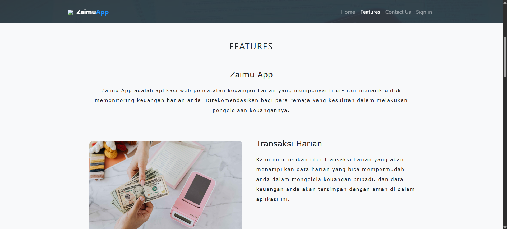

Aplikasi Pencatatan Keuangan
Aplikasi berbasis web untuk mencatat keuangan yang dikerjakan oleh tim dari 3 orang menggunakan HTML, PHP, CSS, dan JavaScript.
Saya adalah Mahasiswa lulusan Universitas Informatika dan Bisnis Indonesia (UNIBI) dengan IPK 3.69, meminati Cyber Security dan Web Development. Memiliki kemampuan komunikasi yang baik, terbiasa bekerja kolaboratif, dokumentasi rapi, serta memiliki pengalaman praktis pada manajemen jaringan dan pemantauan infrastruktur.
Beberapa proyek coding yang pernah saya buat.
Aplikasi berbasis web untuk mencatat keuangan yang dikerjakan oleh tim dari 3 orang menggunakan HTML, PHP, CSS, dan JavaScript.
Web sederhana dengan fungsi login, navigasi, aplikasi penghitung, dan tampilan sederhana namun modern.
Halaman profil (biodata singkat) yang menampilkan karya dan kontak. Dibangun dengan HTML & CSS.